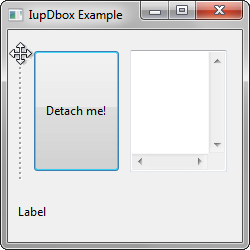
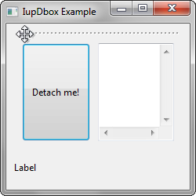

Creates a detachable void container. Dragging and dropping this element, it creates a new dialogue composed by its child or elements arranged in it (for example, a child like IupVbox or IupHbox).
It does not have a native representation, but it contains also a IupCanvas to implement the bar handler.
Ihandle* IupDbox(Ihandle* child); [in C]
iup.dbox{child: ihandle} -> (elem: ihandle) [in Lua]
dbox(child) [in LED]
child: Identifier of an interface element that will receive the box. It can be NULL.
Returns: the identifier of the created element, or NULL if an error occurs.
BARSIZE (non inheritable): controls the size of the bar handler. Default: 5.
COLOR: Changes the color of the bar grip affordance. The value should be given in "R G B" color style. Default: "160 160 160".
EXPAND (non inheritable): The default value is "YES".
ORIENTATION (creation only): Indicates the orientation of the bar handler. The direction of the resize is perpendicular to the orientation. Possible values are "VERTICAL" or "HORIZONTAL". Default: "VERTICAL".
OLDPARENT_HANDLE (read only): returns the previous parent of the detached element.
OLDBROTHER_HANDLE (read only): returns the previous brother of the detached element.
NEWDIALOG_HANDLE (read only): returns the new dialog containing the detached element.
SHOWGRIP (non inheritable): Shows the bar grip affordance. Default: YES. When set to NO, the BARSIZE is set to 3.
WID (read-only): returns -1 if mapped.
FONT, SIZE, RASTERSIZE, CLIENTSIZE, CLIENTOFFSET, POSITION, MINSIZE, MAXSIZE: also accepted.
DETACH_CB: Callback called when the user is dragging the box in order to detach it.
int function(Ihandle* ih, int status); [in C] elem:detach_cb(status: number) -> (ret: number) [in Lua]
ih: identifier of the element that activated
the event.
status: 0=drag begin, 1=drag end, 2=drag cancel (the ESC
key was pressed during the dragging).
The controls that you want to be resized must have the EXPAND=YES attribute set. The control inside the sbox will not be resized with a size lesser than its Natural size. See the Layout Guide for mode details on sizes.
The IupCanvas bar handler is always the first child of the sbox. It can be obtained using IupGetChild or IupGetNextChild.
IupSbox can be resized above the maximum size so some controls go to outside the dialog area at right or bottom. In fact this is part of the dynamic layout default reposition of controls inside the dialog. See the IupRefresh function. The IUP layout does not have a maximum limit only a minimum, except if you use the MAXSIZE common attribute.
The box can be created with no elements and be dynamic filled using IupAppend or IupInsert.
|  ORIENTATION = VERTICAL |
 ORIENTATION = HORIZONTAL |